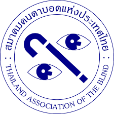
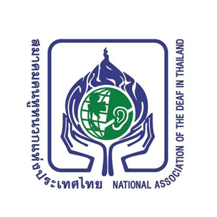
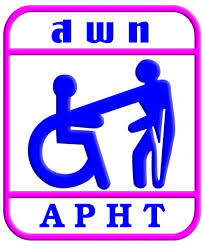
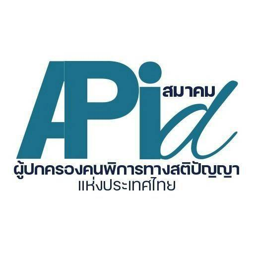
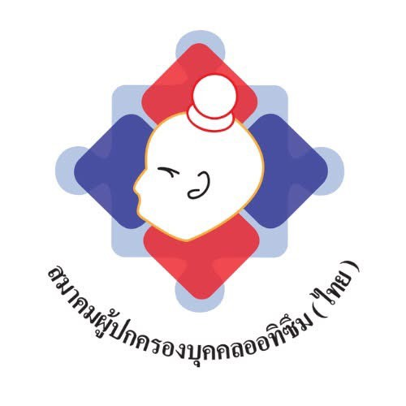
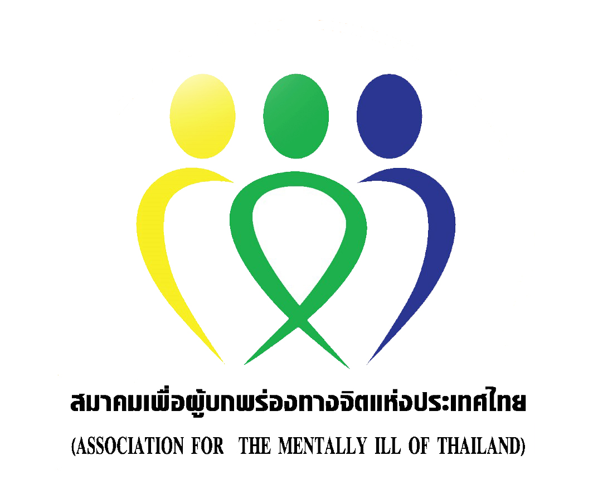

Site Map & Flow การทำงานของเว็บไซต์
สมาคมสภาคนพิการทุกประเภทแห่งประเทศไทย (Disabilities Thailand — DTH)
หน้าเว็บ (page)
ส่วนในหน้า (section)
ลิงก์ภายนอก
จุดที่ผู้ใช้กดทำงาน (interaction)
🗺️ 1. Site Map — โครงสร้างหน้าเว็บ
หน้าหลักหน้าเดียวรวมทุก section, หน้ารองแยกตามเมนู — ลิงก์ข่าว/บทความเชื่อมไปเว็บทางการ dth.or.th
หน้าแรก — dth-v2.htmlTopbar · แถบ Accessibility · เมนู 4 หมวด · Hero Slider (สไลด์เดียว) · สาระน่ารู้ (แท็บกรองในหน้า) · ติดตาม Facebook · สิทธิคนพิการ · Q&A · เครือข่าย · สายด่วน 1479 · ติดต่อ+แผนที่ · Footer · ปุ่มติดต่อลอย (โลโก้ DTH) · แถบกลับขึ้นด้านบน
เกี่ยวกับเราabout.html
ความเป็นมา (#history)
วัตถุประสงค์ 10 ประการ
วิสัยทัศน์ / พันธกิจ
คณะกรรมการ 30 รายชื่อ (#board)
เจ้าหน้าที่สมาคมstaff.html
ผลงานสภา (#milestones)
องค์การสมาชิก 6 องค์การ (#members)
เครือข่าย#network ในหน้าแรก
องค์การคนพิการ → about.html#members
สภาฯ ประจำจังหวัดprovinces.html
หน่วยงานที่เกี่ยวข้อง 8 แห่ง
Facebook / X / YouTube / TikTok
ข่าวสารและกิจกรรมnews.html
ข่าวประชาสัมพันธ์ (?cat=pr)
กิจกรรม (?cat=activity)
รายงานประจำปี (?cat=report)
บทความเต็ม → dth.or.th
ข้อมูลสำคัญรวมจุดเข้าถึงข้อมูล
ข้อเสนอproposals.html
กฎหมาย + เอกสารดาวน์โหลดregulations.html (#laws)
DTH-Magazinemagazine.html
สิทธิคนพิการที่ควรรู้ (#rights — 4 แท็บ)
คำถามที่พบบ่อย (#qa)
คลังสื่อ / อินโฟกราฟิกmedia.html
🚶 2. User Flow — เส้นทางการใช้งานหลัก
4 เส้นทางที่ผู้ใช้เข้ามาทำบ่อยที่สุด ออกแบบให้จบงานได้ในไม่กี่คลิก
A ค้นหาสิทธิของตัวเอง
เข้าหน้าหลัก → เมนู สิทธิและสวัสดิการ
↓
เลือกแท็บหมวดที่ต้องการ (บัตร / เบี้ย / เรียน-ทำงาน / ร้องเรียน)
↓
อ่านสรุปสั้น + การ์ดข้อมูลอ้างอิง (สถานที่ยื่น, เอกสาร, อายุบัตร)
↓
กดปุ่ม CTA → แหล่งข้อมูลเต็ม (dth.or.th / Job Fin Fin / ติดต่อ)
↓
ได้คำตอบ รู้ว่าต้องเตรียมอะไร ไปที่ไหน
B ติดตามข่าวสาร / สาระน่ารู้
เข้าหน้าแรก → section สาระน่ารู้
↓
เลือกแท็บหมวด (ล่าสุด / สุขภาพ / ทั่วไป / สมาคมคนตาบอด) — กรองการ์ดในหน้าทันที ไม่ reload
↓
เลือกการ์ดข่าว (ภาพ + วันที่ + ยอดเข้าชม)
↓
เปิดบทความเต็มที่ dth.or.th (แท็บใหม่ — ไม่หลุดจากหน้าเดิม)
↓
อ่านจบ กลับมาหน้าเดิมได้ทันที
C ติดต่อ / ร้องเรียน
กดปุ่มติดต่อลอย (FAB มุมขวาล่าง — มีทุกหน้า)
↓
ส่งข้อความ → เปิด modal ฟอร์ม
โทร 02-354-4260 / สายด่วน 1479
Facebook Page
อีเมล disabilitiesth@gmail.com
↓
กรอกชื่อ + ช่องทางติดต่อกลับ + ข้อความ → กดส่ง (มี validation)
↓
แจ้งเรื่องสำเร็จ ทีมงานติดต่อกลับ
D ปรับการแสดงผล (Accessibility)
แถบ a11y อยู่บนสุด มองเห็นก่อนเนื้อหา
↓
ขนาดอักษร ก ก ก (เล็ก/ปกติ/ใหญ่)
โหมดสี C C C (ปกติ/ขาวดำ/เหลืองดำ)
↓
JS ปรับ CSS variable ทั้งเว็บทันที ไม่ reload
↓
อ่านสบายตา ทุกกลุ่มผู้ใช้รวมผู้พิการทางสายตา
⚙️ 3. Flow การทำงานของระบบ
เว็บเป็น static site — HTML + CSS + vanilla JS ไม่มี backend ของตัวเอง ข้อมูลสด ๆ ดึงจากบริการภายนอก
ผู้ใช้
- คนพิการและครอบครัว
- ผู้ดูแล / องค์กรเครือข่าย
- ประชาชนทั่วไปที่หาข้อมูลสิทธิ
- ทุกอุปกรณ์ — responsive + screen reader
⇄
เว็บไซต์ DTH (static)
- dth-v2.html + dth-v2.css — โครงหน้า, ธีมธรรมชาติ
- JS ในหน้า: slider, แท็บข่าว/สื่อ/สิทธิ, เมนูมือถือ, FAB, modal
- ระบบ a11y: font-size scale + high-contrast themes
- รูป/โลโก้จากโฟลเดอร์ Pic/ และไฟล์งานในเครื่อง
⇄
บริการภายนอก
- dth.or.th — บทความ, อินโฟกราฟิก, เอกสาร PDF
- Facebook Page Plugin — ฟีดข่าวสด
- Google Maps embed — แผนที่สมาคม
- Google Fonts — Mitr / Sarabun
- โทรศัพท์ / อีเมล (tel: , mailto:)
🤝 4. เครือข่าย 6 องค์การสมาชิก (โลโก้จากโฟลเดอร์งาน)
แสดงในหน้าหลัก section #network — แต่ละโลโก้ลิงก์ไป Facebook ของสมาคมนั้น

สมาคมคนตาบอดแห่งประเทศไทย

สมาคมคนหูหนวกแห่งประเทศไทย

สมาคมคนพิการแห่งประเทศไทย

สมาคมผู้ปกครองคนพิการทางสติปัญญาฯ

สมาคมผู้ปกครองบุคคลออทิซึม (ไทย)

สมาคมเพื่อผู้บกพร่องทางจิตแห่งประเทศไทย
จัดทำเพื่อใช้สื่อสารโครงสร้างเว็บไซต์ DTH Redesign v2.1 "Human & Natural" — มิถุนายน 2569 · พิมพ์เป็น PDF ได้ (Ctrl+P)